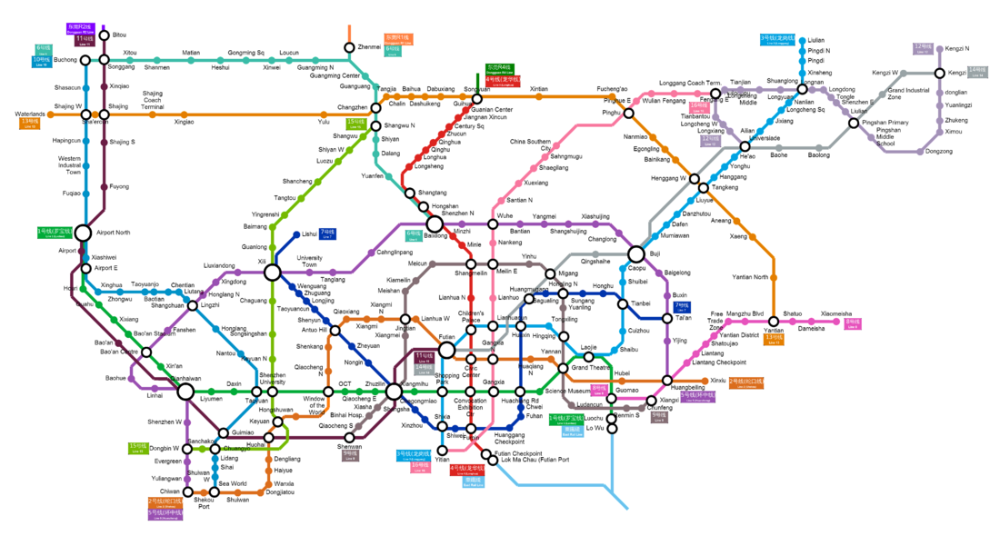
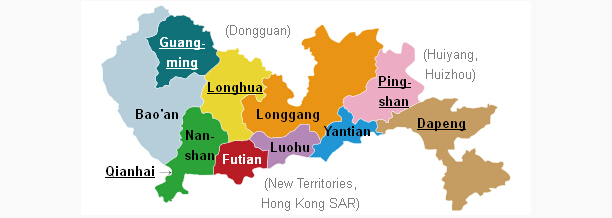

Event Location Address:
Event Location Address:OpenTechSummit China
3rd floor, Building C2, Tsinghua University Campus in the University Town, Shenzhen, China
Choose a hotel or Airbnb for your stay.
The venue is Kexing Science Park, located in Nanshan district. We recommend staying centrally in Shenzhen for easy access to the venue and other parts of the city.
The Metro Map (hardcopy available at the metro stations): http://www.szmc.net/page/html5en.html

Shenzhen is more famous with it manufacturing industry. Most of visitors come to this city on business purpose instead of tourism. But there are actually some best known attractions to tourists, like Splendid China and Cultural Folk Villages, Window of the World, OCT East Shenzhen, etc. When it comes to deciding where to stay in Shenzhen it will really depend on your purpose for being there.
Shenzhen is charted to ten districts as the map shows below. Among them, Futian District (福田区), Luohu District (罗湖区) and Nanshan District (南山区) are mainly downtown areas and where most local residents live. Thanks to eight metro lines connecting the city efficiently, you will find getting around in Shenzhen is very convenient.

Dongmen Old Street, Luohu District (东门老街， 罗湖区)
Dongmen Old Pedestrian Street is the most traditional and popular commercial street in the city. There is a variety of shops, selling high-end products to cheap ones. Here is definitely one of the centers in this city. There are also a lot of restaurants to taste different food, from local snacks to tasty cuisine from the world.
Metro Line 1 and 3 connect Dongmen to other places in Shenzhen, which make it easily to get the places wherever you want. You can take either line 1 or 3 and get off at Laojie Station.
Overseas Chinese Town, Nanshan District (华侨城， 南山区)
Most of the famous attractions are located around Overseas Chinese Town (OCT) in Nanshan District, like Splendid China and Cultural Folk Villages, Window of the World, Minsk World, Dafen Oil Painting Village, OCT East Shenzhen themed parks. This area is a tourist holiday resort combining catering, shopping and amusement. Overseas Chinese Town is just located in the west side of CBD of Shenzhen. Metro Line 1 and 2 go through this place.
Staying in this place, it would convenient to sightseeing, and near to city center as well. Hotels here are mostly high-end tourist or business hotels. And the price is comparatively higher.
Huaqiangbei Commercial Area, Futian District (华强北商业区， 福田区)
Huaqiangbei in Futian District is the business center in Shenzhen. Skyscrapers can be found everywhere. It is most famous for selling electric products, as well as clothing. The electronic business district is regarded as the Zhongguancun in Beijing. It has become a global electronic products gathering place. Except for electronic products, you can also find shopping malls, food streets and amusement center here.
Metro Line 1 goes through this place. You can take it to Splendid China and Cultural Folk Villages, Window of the World, Minsk World, Dafen Oil Painting Village, OCT East Shenzhen by around 20 minutes.
We have also listed some options as an example listed below:
Fraser Place Shekou Shenzhen ★★★★★: overlooking Shekou Harbour and offering a panoramic view of the scenic Shenzhen Bay. Major commercial buildings are within convenient walking distance from the hotel.
Rate US$102++
https://shekou.frasershospitality.com/
https://www.booking.com/hotel/cn/fraser-place-shekou.html
Grand Mercure Oriental Ginza Shenzhen★★★★★: located in Futian business district, just steps away from Zhuzilin Subway Station (Line 1). The hotel is a 15-minutes drive to Futian Port, Huanggang Port and Shenzhen Convention and Exhibition Centre. Tourism attractions like Window of the World, Happy Valley and Hongshulin Nature Reserve are 10-minute drive away, Shenzhen High-tech Industrial Park is 20-minute drive away.
Rate US$106++
http://www.grandmercure.com/GRAND-MERCURE-ORIENTAL-GINZA
https://www.booking.com/hotel/cn/orientalginzashenzhen.html
Crowne Plaza Hotel & Suites Landmark Shenzhen★★★★★: just 3 minute-walk from Guomao Metro Station (Line 1, Exit B), within a 5-minute walk from Jingguanghua Plaza and Dongmen. A free shuttle bus goes to Luohu Train Station, a 5-minute drive away.
Rate US$138++
http://crowne-plaza-hotel-suites-landmark-shenzhen.hotel-shenzhen.com/en/
https://www.booking.com/hotel/cn/crowne-plaza-landmark-shenzhen.html
Shangri-La Hotel Shenzhen ★★★★★: located in the Luohu District, a 5-minute walk from the Hong Kong border, the Shenzhen Train Station, and the Luohu subway station.
Rate US$142++
http://www.shangri-la.com/shangrila/city/shenzhen/
https://www.booking.com/hotel/cn/shangri-la-shenzhen.html
Hilton Shenzhen Futian★★★★★: located in the Heart of Shenzhen, Shenzhen Bao'an International Airport is 29 km away.
Rate US$172++
http://www3.hilton.com/en/hotels/china/hilton-shenzhen-futian-SZXSFHI/index.html
https://www.booking.com/hotel/cn/hilton-shenzhen-futian.html
The Langham, Shenzhen ★★★★★: Situated in the heart of Futian, Shenzhen’s commercial and retail hub, The Langham, 7-minute stroll from Exit B of Chegongmiao Subway Station (Luobao Line), 6-minute drive from Shenzhen Golf Club and 15-minute drive from Futian Port and Huanggang Port. Tourist attractions like Window of the World and Happy Valley can be reached in a 10-minute drive.
Rate US$185++
http://www.langhamhotels.com/en/the-langham/shenzhen/
https://www.booking.com/hotel/cn/shenzhen-langham.en-gb.html
Sheraton Shenzhen Futian Hotel★★★★★: 3 minute-walk from MTR Convention & Exhibition Center Station and Central Walk Shopping Mall. Shenzhen Bao’an International Airport and Luohu Railway Station are 30-minute drive away.
Rate US$210++
http://sheratonhotelshenzhenfutian.com/
https://www.booking.com/hotel/cn/sheraton-shenzhen-futian.html
Four Seasons Hotel Shenzhen★★★★★: is directly opposite Shenzhen Convention and Exhibition Centre. The hotel is a 12-minute drive from Luohu Railway Station. Tourist attractions like Window of the World and Happy Valley are within a 20-minute drive away.
Rate US$249++
https://www.fourseasons.com/shenzhen/
https://www.booking.com/hotel/cn/four-seasons-shenzhen.html
InterContinental Shenzhen ★★★★★: 5-minute walk from Huaqiaocheng Subway Station, 25 km from Shenzhen Railway Station and Shenzhen Baoan International Airport.
Rate US$307++
http://intercontinental-shenzhen.hotel-shenzhen.com/en/
https://www.booking.com/hotel/cn/intercontinental-shenzhen.en-gb.html
Futian Shangri-La Hotel Shenzhen ★★★★★: located in the commercial centre of Futian District, just steps away from Shenzhen Convention & Exhibition Centre and Shenzhen Civic Centre. The hotel is 8-minute walk away from Shopping Park Metro Station, 6-minute drive from the Hong Kong Border Crossing, 15-minute drive from Louhu Railway Station and Shekou Ferry Terminal.
Rate US$309++
https://www.booking.com/hotel/cn/futian-shangri-la-shenzhen.html
http://www.shangri-la.com/shenzhen/futianshangrila/
12B9F Apartment: Window of the World is 3.2 km away. Shenzhen Bao'an International Airport is 20.9 km away.
Rate US$37++
https://www.booking.com/hotel/cn/12b9f-shenzhen.html
Jinjiang Inn - Shenzhen Fumin Road ★★★: The hotel is close to the metro station and is only a 5-minute drive from Shenzhen Convention and Exhibition Centre.
Rate US$ 43++
https://www.booking.com/hotel/cn/jj-inns-shenzhen-fumin-road.html
Vienna Hotel Shenzhen Xiashuijing Subway Station ★★★★: Shenzhen Bao'an International Airport is 30.6 km away.
Rate US$ 47++
https://www.booking.com/hotel/cn/vienna-hotel-shenzhen-xiashuijing-subway-station.html
Shengang Hotel Apartment Shenzhen Dongmen Branch: Dongmen Pedestrian Street and Dongmen Food Street are a 2-minute walk away. The property is a 10-minute walk from Laojie subway station, a 12-minute walk from KingGlory Plaza, a 5-minute drive from Shenzhen Grand Theatre, and an 8-minute drive from Luohu Port. Tourist attractions like Happy Valley and Window of the World are a 25-minute drive away.
Rate US$47++
https://www.booking.com/hotel/cn/shengang-apartment-dongmen-shenzhen.html
Sou Hou Apartment: located 1 km away from Window of the World. The nearest airport is Shenzhen Bao'an International Airport, 19.3 km away.
Rate US$48++
https://www.booking.com/hotel/cn/sou-hou-apartment.html
Chengjia Apartment Nanshan Metro Station: located 4.5 km from Window of the World. Shenzhen Bao'an International Airport is 17.7 km from the property. away.
Rate US$50++
https://www.booking.com/hotel/cn/cheng-jia-gong-yu-shen-zhen-nan-shan-di-tie-zhan-dian.html
ChengPin Apartment ★★★: Window of the World is 1.4 km away. Shenzhen Bao'an International Airport is 17.7 km away.
Rate US$ 53++
https://www.booking.com/hotel/cn/cheng-pin-shang-wu-gong-yu.html
ChengHome Apartment Shenzhen Huaqiang North: located 12.9 km away from Window of the World is 12.9 km. Shenzhen Bao'an International Airport is 30.6 km away.
Rate US$56
https://www.booking.com/hotel/cn/cheng-jia-gong-yu-shen-zhen-hua-qiang-bei-dian.html
eeHome: 16.1 km from Window of the World. Shenzhen Bao'an International Airport is 25.7 km away.
Rate US$56
https://www.booking.com/hotel/cn/eehome.html
Shenzhen Pengcheng Boutique Apartment: just 14.5 km from Window of the World. Shenzhen Bao'an International Airport is 32.2 km away.
Rate US$62
https://www.booking.com/hotel/cn/shen-zhen-shi-peng-cheng-jing-pin-gong-yu.html
Shenzhen Luohu Century Plaza Hotel ★★★★: located just 300 m from Shenzhen Railway Station, 500 m from Lo Wu Commercial Centre or the popular East Gate Street and 800 m from Luohu Subway Station. The hotel is a 10-minute walk from Dongmen Pedestrian Street or Mix City Shopping Mall and a 15-minute walk from Queen Spa. Shenzhen Convention & Exhibition Center or Kingkey 100, Happy Valley, Window of the World, OCT East Shenzhen and China Folk Culture Village can be reached within 30 minutes by subway.
Rate US$ 66++
https://www.booking.com/hotel/cn/century-plaza.html
Paco Hotel Shenzhen Laojie Metro Branch★★★★: 20-minute drive from Shenzhen Stadium, 33-minute drive from He Xiangning Art Museum , about 40 minutes' drive from Happy Valley Theme Park Shenzhen.
Rate US$78++
https://www.booking.com/hotel/cn/bo-gao-song-shen-zhen-dong-men-dian.html
Shenzhen Shanghai Hotel ★★★: located in Huaqiangbei Business Zone, it is 200 m away from Huaqiang Road Metro Station (Line 1). The hotel is a 10-minute drive from Luohu Railway Station and a 15-minute drive from Shenzhen Exhibition Centre. Bao’an International Airport is 30km away..
Rate US$88++
https://www.booking.com/hotel/cn/shenzhen-shanghai.html
Duowei Apartment Luohu Mix City Branch: a 5-minute walk from Shenzhen Mixc Shopping Centre. The Ludancun Subway Station (line 9) is located just downstairs. The Grand Theatre Subway Station (line 1 and 2). is a 10-minute walk away. Shenzhen Railway Station and Luohu Port and Shenzhen Convention and Exhibition Centre are 10-minute drive away.
Rate US$88++
https://www.booking.com/hotel/cn/duo-wei-jiu-dian-gong-yu-luo-hu-mo-xiang-cheng-dian.html
Laiyin Garden City Hostel: located 1.8 km from Window of the World, Shenzhen Bao'an International Airport is 17.7 km away.
Rate US$5++ per bed
https://www.booking.com/hotel/cn/lai-yin-hua-yuan-cheng-shi-qing-nian-lu-she.html
Shenzhen Bay International Hostel: Shenzhen Bao'an International Airport is 19.3 km away.
Rate US$9++ per bed
https://www.booking.com/hotel/cn/shen-zhen-wan-guo-ji-lu-she.html
Dengba Hostel Shenzhen Convention Center Branch: located 700m away from Shenzhen Convention & Exhibition Centre is 700 m away, 1.8km away from Shenzhen Civic Centre, 4.3km away from Shenzhen Stadium and 9km away from He Xiangning Art Museum. Shenzhen Bao'an International Airport is 29 km away.
Rate US$10++ per bed
https://www.booking.com/hotel/cn/dengba-hostel-shenzhen-convention-center-branch.html
Shenzhen Xinyu Youth Hostel (Futian Central Plaza Branch): Shenzhen Bao'an International Airport is 29 km away.
Rate US$11++ per bed
https://www.booking.com/hotel/cn/shenzhen-xinyu-youth-futian-central-branch.html
Lee Home Youth Hostel: 400 m away from Shenzhen Convention & Exhibition Centre and 1.8 km from Shenzhen Civic Center. Shenzhen Stadium is 5 km away while He Xiangning Art Museum is 8 km away. Shenzhen Bao'an International Airport is 28 km away.
Rate US$12++ per bed
https://www.booking.com/hotel/cn/shenzhen-leehome-youth-hostel.html
Shenzhen Foreigner Youth Hostel near Hongkong: Shenzhen Bao'an International Airport is 27.4 km away.
Rate US$13++ per bed
https://www.booking.com/hotel/cn/shenzhen-foreigner-youth-hostel-near-hongkong.html
Mori's Garden Hostel Sea World: located a short distance from attractions such as Shekou Sea World, 8km away from He Xiangning Art Museum and Happy Valley Theme Park Shenzhen. Shenzhen Bao'an International Airport is 21 km away.
Rate US$13++ per bed
https://www.booking.com/hotel/cn/mo-li-de-wu-ding-hua-yuan.html
Hull's Cattery Guesthouse: located 15-minute walk away from Baoti and Bao’an metro station. Window of the World and Happy Valley Theme Park Shenzhen are within 30 minutes drive away.
Rate US$14++ per bed
https://www.booking.com/hotel/cn/he-er-mao-she.html
http://www.hostelworld.com/hostels/Shenzhen
https://www.couchsurfing.com/places/asia/singapore/shenzhen
Event Location Address: